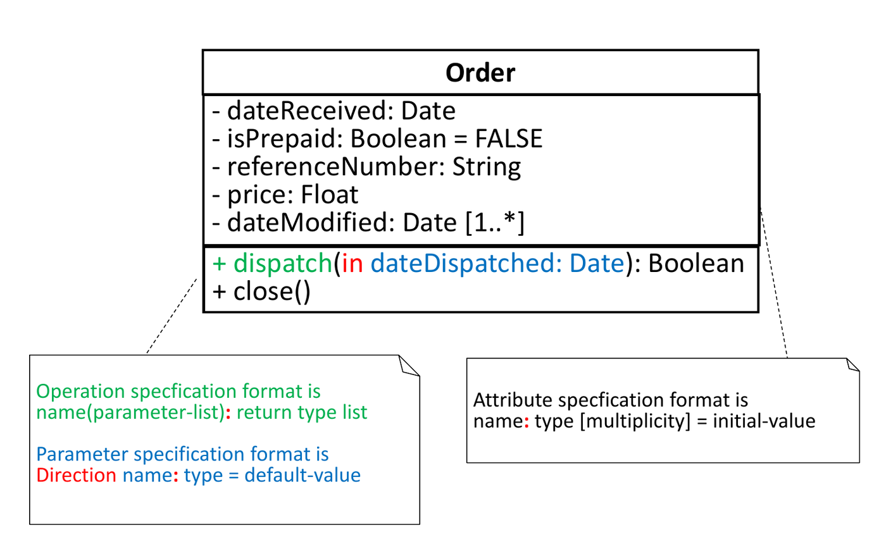
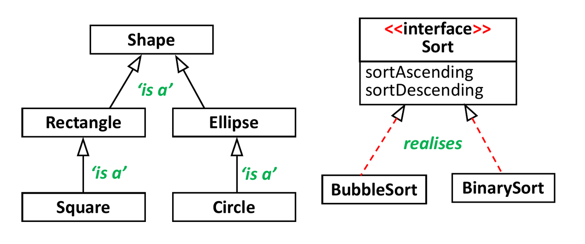
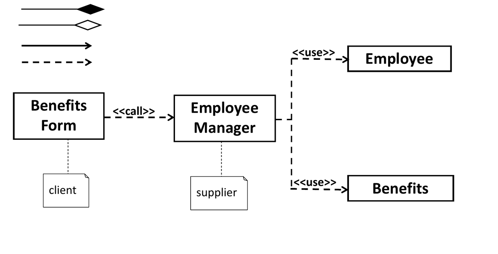
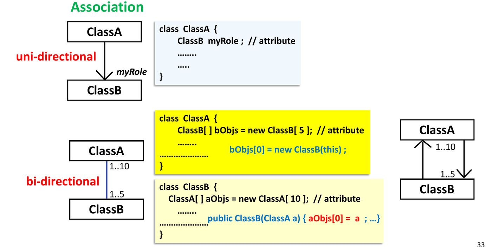
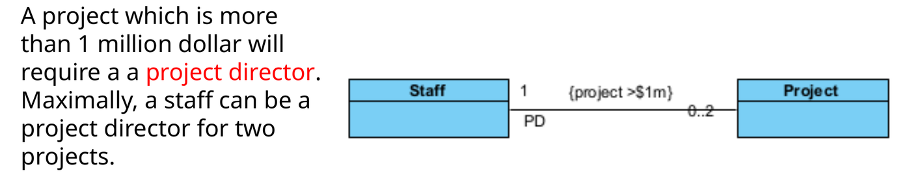
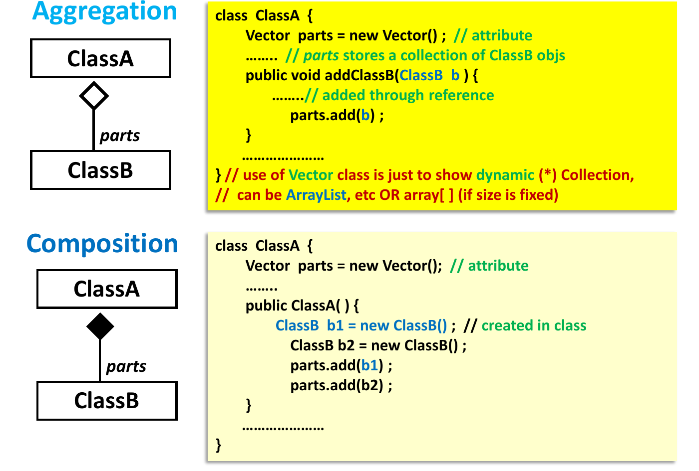
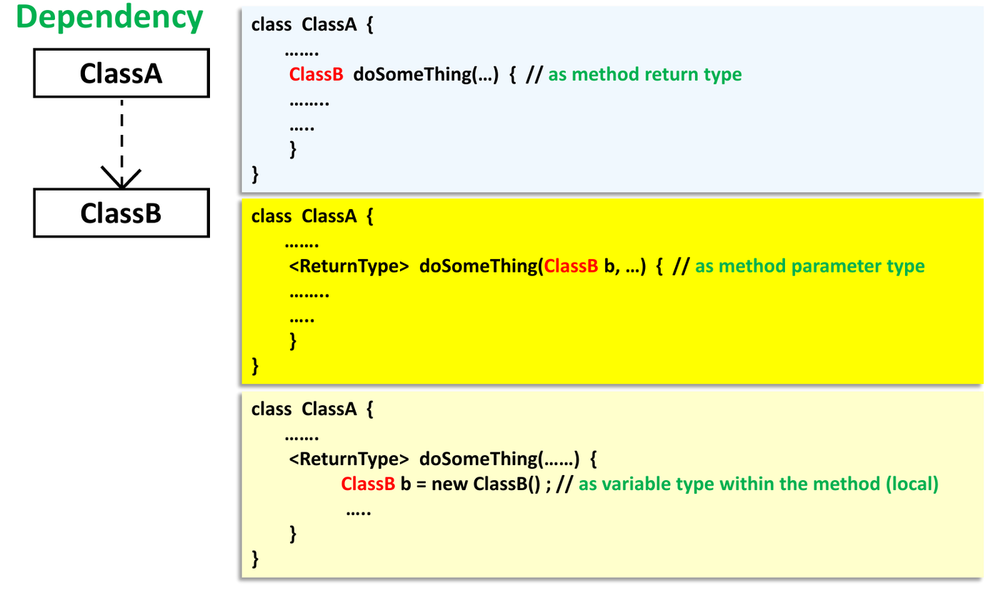
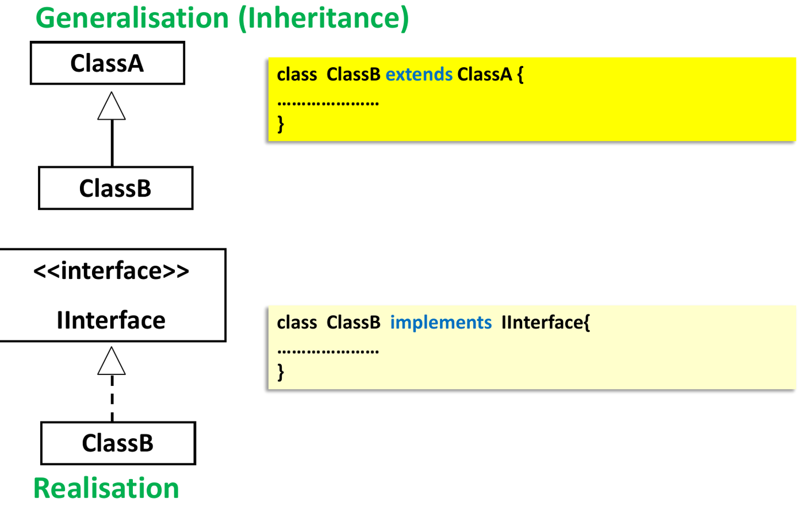
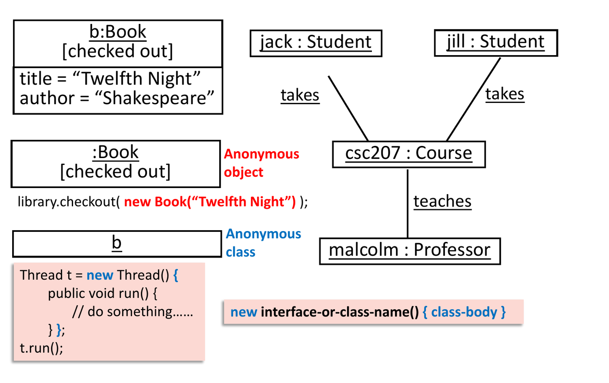

UML Class Diagrams and Class Relationships
This chapter covers Lecture 6 (UML class diagrams and class relationships). The quiz tests three skills: name the relationship from a description or from code, read the notation, and turn a diagram into code (or code into a diagram).
1. Why Model, and What UML Is
A model is a simple version of a real thing. It helps people see the problem, talk about it, design the solution, and keep a record. A good model keeps only what matters for its purpose. “Everything should be made as simple as possible, but not simpler.”
The Unified Modeling Language (UML) is a visual language to specify, document and communicate the design of a software system. Booch, Jacobson and Rumbaugh made it (1996). The Object Management Group (OMG) adopted it (1997).
UML has two families of diagrams:
| Structure diagrams (static: what exists) | Behaviour diagrams (dynamic: what happens) |
|---|---|
| Class diagram, object diagram, component, deployment, package, composite structure | Sequence diagram, use case, activity, state machine, communication, timing, interaction overview |
This course uses the class diagram (this chapter) and the sequence diagram (Chapter 7).
2. One Class in UML
A class is a box with three parts: the name, the attributes, and the operations.

| Item | Format | Example |
|---|---|---|
| Attribute | visibility name: type [multiplicity] = initial-value |
- isPrepaid: Boolean = FALSE |
| Operation | visibility name(parameter-list): return-type |
+ dispatch(in d: Date): Boolean |
| Parameter | direction name: type = default-value |
in dateDispatched: Date |
- Parameter direction is
in,outorinout. - Visibility:
+public,-private,#protected,~package. - A static member is underlined.
- An abstract class or operation is in
italics, or has
{abstract}. - An interface has the stereotype
<<interface>>above its name. - An enumeration has
<<enumeration>>and lists its values (Sunday,Monday, …). - A constructor is shown as an operation with the class name, with no
return type:
+ Employee(String).
3. The Six Relationships
Learn these six lines. The quiz often shows a line and asks its name, or asks which line fits a description.

| Relationship | Meaning | Line | Java code |
|---|---|---|---|
| Dependency | “uses-a”, for a short time | Dashed, open arrow → to the class used | Parameter, return type, or local variable |
| Association | “has-a” / “knows-a”, long-term | Solid line (arrow shows direction) | A field |
| Aggregation | Weak “part-of” | Solid line, hollow diamond ◇ at the whole | A field; part made outside and passed in |
| Composition | Strong “part-of” | Solid line, filled diamond ◆ at the whole | A field; part made inside the whole |
| Inheritance (generalisation) | “is-a” | Solid line, hollow triangle ▷ at the parent | extends |
| Realisation | “implements” | Dashed line, hollow triangle ▷ at the interface | implements |
The hollow triangle always points to the more general (more abstract) side.
Grouped by meaning:
- is-a: inheritance, realisation.
- uses-a: dependency.
- has-a: association.
- part-of: aggregation, composition (special kinds of association).
4. Inheritance and Realisation


- Generalisation: class to class, or interface to
interface. In Java:
extends. - Realisation: class to interface. In Java:
implements. - An interface that extends an interface uses the generalisation line (solid), because no implementation happens. Only a class implements an interface.
- An abstract class is still a class. It uses generalisation to its parent class and realisation to an interface.
- Multiplicity is not used on is-a lines.
5. Dependency: “uses-a”
A dependency means one class uses another class for a short time to do a task. It does not keep a reference as a field. The link ends when the method ends.

class ClassA {
ClassB make() { ... } // ClassB as a return type
void use(ClassB b) { b.callMethod(); } // ClassB as a parameter
void work() { ClassB b = new ClassB(); } // ClassB as a local variable
}- The arrow goes from the client (the user) to the supplier (the class used). A change in the supplier can affect the client.
- Examples: a
Studentuses aVendingMachine; aTeacheruses aTutorialRoom; aPaymentServicegets aCreditCardas a parameter and does not store it. - A stereotype such as
<<use>>,<<call>>or<<instantiate>>can name the kind of dependency.
Dependency vs association: is the other object stored in a field?
public class A {
private C c; // A–C: association (field)
public void myMethod(B b) { b.callMethod(); } // A–B: dependency (parameter only)
}A Teacher whose teach(Student s) takes a
student as a parameter has a dependency on
Student. The teacher cannot “remember” the students after
the method ends. If Teacher has a field
Student mentee, it is an association.
6. Association: “has-a”
An association is a long-term link. One class holds a reference to the other in a field, so the objects can talk to each other over their whole lives.
Direction (navigability)
- A plain line with no arrows: bi-directional (the default). Each class has a field of the other type. A student knows the teacher, and the teacher knows the student.
- An arrow on one end: uni-directional. Only the
class at the tail holds a field.
A → Bmeans A has aBfield; B does not know A. - An
xon an end means “not navigable” from that side.


Labels on an association

| Label | Where | What it says | Example |
|---|---|---|---|
| Association name | Middle of the line, usually with a ▶ to show reading direction | The meaning of the link, as a verb phrase | takes, teaches, rents |
| Role name | At one end | The part the object at that end plays. Often the field name in code. | bookItems, manager,
tenant |
| Multiplicity | At each end | How many objects at that end link to one object at the other end | 1, 0..1, 1..*,
* |
| Constraint | In { } near the line or in a note |
A rule that must hold | {ordered}, {project > $1m} |
- Association names and role names are optional. Add them when the link would otherwise be unclear, or when one class plays two roles.
- The association name says what the link means. It does
not say which method is called. “Student enrols in
Course” can be done by
student.enroll(course),course.addStudent(student), or a third object. - A reflexive association links a class to itself,
for example a
Personwho manages otherPersonobjects (rolesmanagerandsubordinate).
Multiplicity
| Notation | Meaning |
|---|---|
1 |
Exactly one |
0..1 |
Zero or one (optional) |
* or 0..* |
Zero or more |
1..* |
One or more |
1..2 |
One or two |
4 |
Exactly four |
- Read it from the far end. The number next to class
B tells how many B objects link to one A object.
Shelf 1 —— 1..* Bookmeans one shelf holds one or more books, and each book is on exactly one shelf. - In code, a
1or0..1end becomes a single field. A*end becomes an array or a collection (ClassB[],List<ClassB>). - Multiplicity applies only to has-a relationships (association, aggregation, composition), not to inheritance or dependency.
- Check that code matches:
Companywith a singleEmployee stafffield cannot model a company with many employees.
Constraints
A constraint states a rule about the classes and their objects. It mostly goes on has-a links (sometimes on dependency, almost never on inheritance).

Association class
When the link itself has data, use an association
class. A Loan between Borrower and
Equipment has a date. The date does not belong
to the borrower or to the equipment; it belongs to the loan. Draw the
Loan class joined by a dashed line to the association, or
make Loan a normal class between the two.

7. Aggregation and Composition: “part-of”
Both are special associations with a whole and its parts. The diamond is always at the whole.
| Aggregation (weak) | Composition (strong) | |
|---|---|---|
| Diamond | Hollow ◇ | Filled ◆ |
| Can the part exist without the whole? | Yes | No, the part lives and dies with the whole |
| Can a part belong to many wholes? | Yes | No, at most one whole at a time |
| Who makes the part? | Made outside, then added through a reference | Made inside the whole (often in its constructor) |
| Multiplicity at the whole | Any (*, 1..*) |
1 or 0..1 |
| Examples | Team–Player, LectureGroup–Person, Family–Person, VendingMachine–CanDrink | Human–Arm, Human–Leg, Arm–Hand, House–Room |


// Aggregation: the part already exists; the whole only stores a reference
class Team {
private List<Player> players = new ArrayList<>();
public void addPlayer(Player p) { players.add(p); }
}
// Composition: the whole creates and controls its parts
class House {
private List<Room> rooms = new ArrayList<>();
public House() {
rooms.add(new Room());
rooms.add(new Room());
}
}How to decide: ask “if I delete the whole, do the parts still make sense?” If a team breaks up, the players still exist: aggregation. If a person is deleted, the person’s hands go too: composition.
The words “has-a” and “part-of” describe the same link from two sides: “A tutorial group has students” and “A student is part of a tutorial group”. “A student is a tutorial group” (inheritance) and “a student uses a tutorial group” (dependency) are wrong for that pair.
8. Summary: UML to Java Code
| Diagram | Java |
|---|---|
A —▷ B (solid, hollow triangle) |
class A extends B |
A - - ▷ B (dashed, hollow triangle) |
class A implements B |
A - - > B (dashed, open arrow) |
B appears only as a parameter, return type or local variable in A |
A ——> B multiplicity 1 |
class A { B b; } |
A ——> B multiplicity * |
class A { B[] bs; } or
List<B> bs |
A —— B (no arrows) |
A has a B field and B has an A field |
A ◇—— B |
A has a B field (or collection); B objects are passed in |
A ◆—— B |
A has a B field (or collection); A creates the B objects |


9. Object Diagram
An object diagram shows real objects and their links at one moment, not classes.
- Write each object as
objectName : ClassName, underlined. The object name is optional (:Bookis an anonymous object). - Show attribute values:
title = "Twelfth Night". - A line between two objects is a link (one instance of an association).

10. Class Stereotypes: Boundary, Control, Entity (BCE)
BCE is a modelling pattern (Ivar Jacobson, OOSE). It gives each class one kind of job, early in design, before any code. It is close to MVC (Model–View–Controller), but you use it earlier, during use-case modelling.
| Stereotype | Job | Usual names | Example |
|---|---|---|---|
Boundary <<boundary>> |
Talks to the outside world: the user or another system. Reads input, shows output. | xxxUI, xxxForm,
xxxInterface |
InvoiceForm, UtilisationUI |
Control <<control>> |
Runs the steps of a use case. Coordinates other objects. | xxxMgr, xxxController,
xxxCtrl |
CourseMgr, RideController |
Entity <<entity>> |
Holds data that the system must remember, and the rules on that data. | Domain nouns | Student, Course, Player,
Match |
Chapter 7 shows how the three work together in a sequence diagram.
11. From Requirements to a Class Diagram
- Entity classes: mark the nouns.
Keep nouns that appear many times, and nouns that have their own
details. Drop nouns that are the whole system (
WTA), only another name for a class, or only a value of another class (these become attributes). - Relationships: mark the verbs. “is part of” / “is broken down into” gives aggregation or composition. “is a special” / “can be” gives inheritance. Other verbs give associations (with that verb as the name).
- Attributes: the nouns that describe an entity
(
id,title,status). - Role names: nouns that name an object in a special
role, such as “project manager” or “project director” (both are
Staff). - Multiplicity: words about quantity: “a”, “one to two”, “multiple”, plural nouns (“team members”).
- Enumerations: a fixed list of values (“type of work can be administrative, project, on leave, training, mentoring”).
- Constraints: conditions (“a project above $1 million requires a project director”).
Common errors in class diagrams
- Diamond at the part end instead of the whole end.
- Hollow triangle pointing to the subclass.
- A solid line for realisation, or a dashed line for inheritance.
- A class “implementing” a class, or an interface “implementing” an interface.
- Multiplicity on an inheritance line.
- Multiplicity that does not match the code (one field for a
*end).
12. Quiz Traps
- Parameter or local variable only: dependency. Field: association (or aggregation/composition).
- Diamond goes at the whole. Hollow = aggregation (part can live alone). Filled = composition (part dies with the whole).
- The part is created inside the whole: composition. Passed in from outside: aggregation.
- Triangle points to the parent. Solid =
extends; dashed =implements. - No arrows on an association means bi-directional.
- Multiplicity: read the number at the far end. Only on has-a links.
- Association names are verbs; role names are nouns at the ends.
- Boundary = UI, Control = coordinates a use case, Entity = stored data.